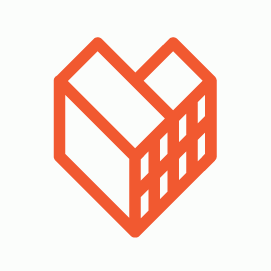
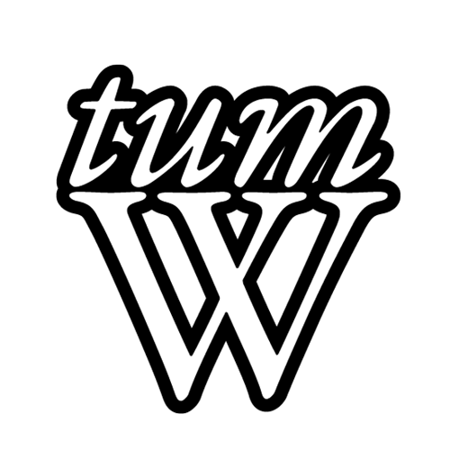

 
12 prac dla Wrocławia
Towarzystwo Upiększania Miasta Wrocławia i Akcja Miasto, przedstawiły dziś listę najważniejszych zadań dla Prezydenta stworzoną w oparciu o priorytety wskazane przez mieszkańców.
Programy większości kandydatów są mocno ogólnikowe, a co za tym idzie niemożliwe do późniejszej weryfikacji. Nasze postulaty oparliśmy więc o twarde wskaźniki i dane liczbowe, tak aby Wrocławianie mogli z ich wypełnienia rozliczać przyszłego Prezydenta